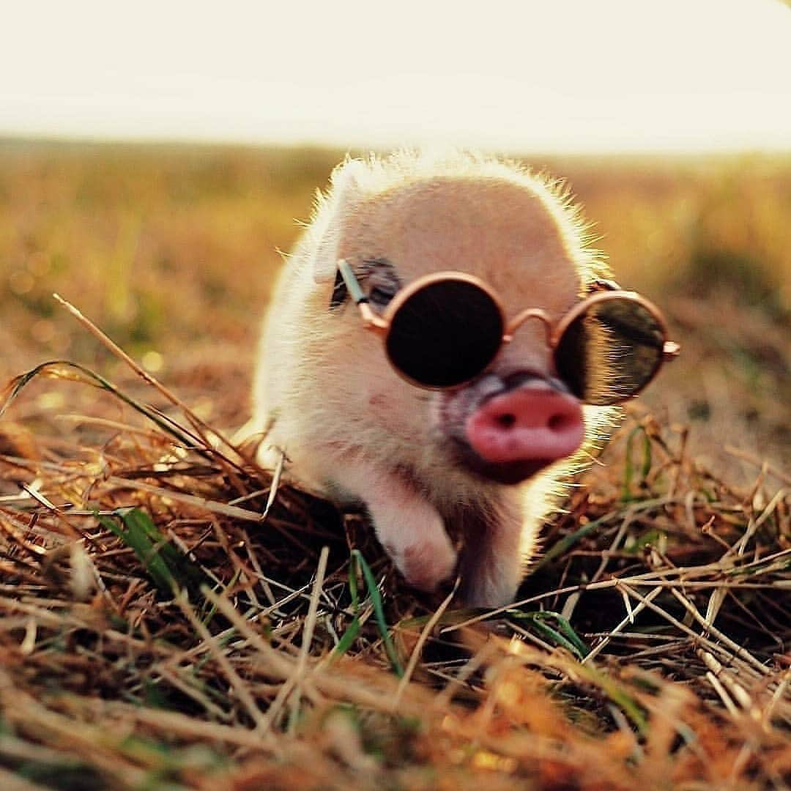
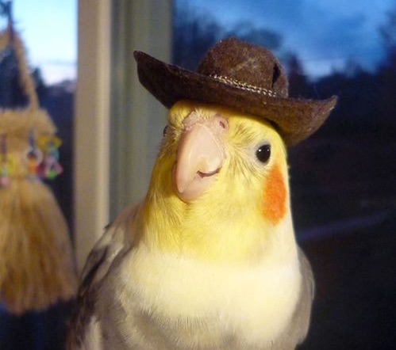

Porcolino Porcorovisky fundou a JobsNET em 2015, com o intuito de unir trabalhadores e empregadores ao redor do mundo. A ideia surgiu após Porcolino perder o seu emprego como conselheiro geral de uma fazenda e ter dificuldades de se recolocar no mercado. Contando com a ajuda de seu amigo programador, Calopsiano da Silva, os dois mantém o incrível banco de talentos da JobsNET.
